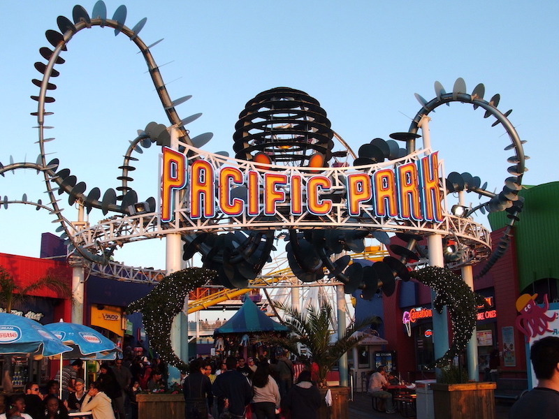

Perfect for private parties or an impromptu ride, this historic icon pairs perfectly with treats from the vintage soda-fountain located inside.
Phone: (310) 394-8042
For kids and kids at heart, this classic arcade will indulge all your nostalgia and test all your skills. Skeeball is only the beginning.
Phone: (310) 451-5133
The hidden gem of the Pier, Heal the Bay’s public marine-education center is hands-on fun tucked just underneath the historic Carousel building.
Phone: (310) 393-6149
This is your one-stop beach shop for sunscreen, towels, beach mats and more. If the Beachcomber doesn’t have it, it may not exist.
Phone: (310) 260-8744
Yes, you can fish at the Pier! And whether you’re a regular or want to try your hand at this relaxing past-time for the day, the Bait & Tackle shop has your needs covered.
Phone: (310) 576-2014
When the sun dips on your day at the beach, stay for some all-American live rock and drink specials at Rusty's.
Phone: (310) 393-7437